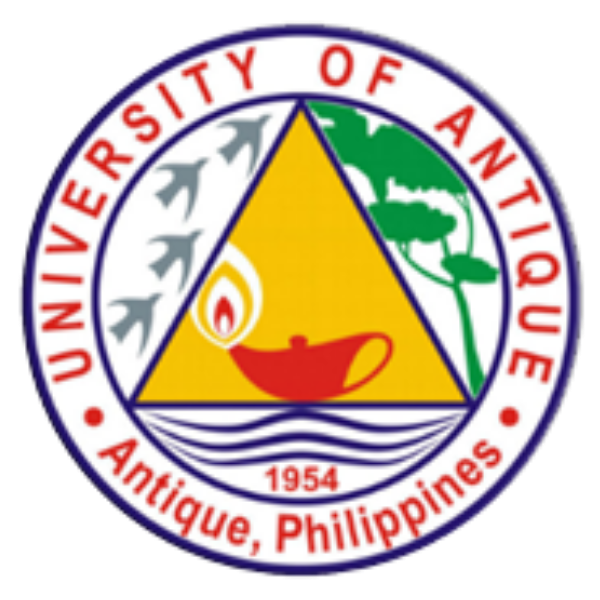

<div class="footer" fxLayout="row" fxLayoutAlign="center center">
    <div fxFlex="50" class="h-100 subtitle" fxLayout="row" fxLayoutAlign="start center">
      This system is for the development of Patient’s Dental and Medical record keeping that improves the paper-based or manual recording of every patient in University of Antique Tario-Lim Memorial Campus.
      Developed by Team PADAYON: 1) Charity Grace L. Estoquia; and 2) Fedelyn P. Tiburcio
    </div>
    
</div>